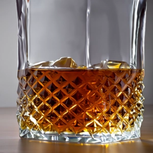

Whiskey
Whiskey er en ældgammel spiritus, der har vundet hjerter over hele verden med sin komplekse smag og dybe karakter. Fra den røgede peatiness af skotsk single malt til den søde karamelagtige varme af amerikansk bourbon, er whiskey synonym med tradition, håndværk og ren nydelse.